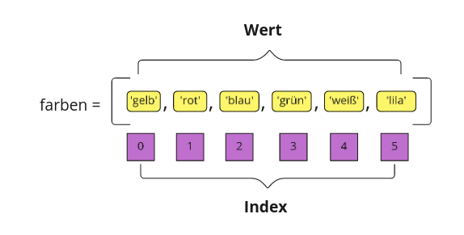

Listen
Contents
Listen#
Ein Datentyp zur Darstellung von Sequenzen oder mehreren zusammengehörigen Objekten.
Syntax#
<list_name> = [<object1>, <object2>, <object3>, ...]
obst = ['Kiwi', 'Apfel', 'Brombeere', 'Mandarine']
Eine Liste kann aus unterschiedlichen Elementen bestehen
# Listen
primzahlen = [2, 3, 5, 7, 11, 13, 17, 19, 23, 29]
print(primzahlen)
code = [True, False, False, True, True, True]
print(code)
planeten = ['Merkur', 'Vater', 'Erde', 'Mars', 'Jupiter', 'Saturn', 'Uranus', 'Neptun']
print(planeten)
# Leere Liste
leere_liste = []
print(leere_liste)
[2, 3, 5, 7, 11, 13, 17, 19, 23, 29]
[True, False, False, True, True, True]
['Merkur', 'Vater', 'Erde', 'Mars', 'Jupiter', 'Saturn', 'Uranus', 'Neptun']
[]
Datentypen können auch gemischt werden
sonstiges = [7, 'Hello', -12, True, 62.9, False, 'Ende']
Länge#
Die Länge einer Liste wird mit len(<list>) abgefragt.
sonstiges = [7, 'Hello', -12, True, 62.9, False, 'Ende']
len(sonstiges)
7
List Methoden - Beispiele#
Methode |
Beschreibung |
|---|---|
sort() |
Sortiert die Liste (aufsteigend, absteigend) |
index() |
Gibt den Index eines Elements zurück |
count() |
Gibt die Anzal des vorhandenen Listeneintrages zurück |
append() |
Fügt ein Element am Ende der Liste hinzu |
extend() |
Hängt eine andere Liste am Ende an |
insert() |
Fügt ein Element in die Liste ein |
remove() |
Löscht ein Element aus der Liste |
Erinnerung: Mit dir(<object>) werden alle Methoden eines Objektes angezeigt.
colors.count('red')
---------------------------------------------------------------------------
NameError Traceback (most recent call last)
Cell In [4], line 1
----> 1 colors.count('red')
NameError: name 'colors' is not defined
Index#
Jedes Element in einer Liste ist einem Index zugeordnet. Über diesen Index kann man das Element zugreifen.
Der Index startet immer bei 0.

Die Syntax
<listname>[<index>]
Beispiel
farben = ['gelb', 'rot', 'blau', 'grün', 'weiß']
farben[0]
# Indexing
farben = ['gelb', 'rot', 'blau', 'grün', 'weiß']
# Element an Index X
print(farben[0])
print(farben[1])
print(farben[2])
gelb
rot
blau
# Wenn der Index gleich oder größer ist als die Länge der Liste, wird ein Fehler zurückgegeben
print(len(farben))
print(farben[5])
print(farben[10])
---------------------------------------------------------------------------
NameError Traceback (most recent call last)
Cell In [1], line 2
1 # Wenn der Index gleich oder größer ist als die Länge der Liste, wird ein Fehler zurückgegeben
----> 2 print(len(farben))
3 print(farben[5])
4 print(farben[10])
NameError: name 'farben' is not defined
Negative Indizes#
Indizes können auch negativ sein. Dies bedeutet das vom Ende der Liste her gezählt wird.
Der Index -1 ist dem letzten Element zugeordnet.
farben = ['gelb', 'rot', 'blau', 'grün', 'weiß']
print(farben[-1])
print(farben[-3])
blau
Nested Lists#
Listen können auch Listen beinhalten.
sonstiges = [1, 7, 23, ['a', 'b', 'c'], 18, True, []]
# Datentyp der einzelnen Listeneinträge
for elem in sonstiges:
print(type(elem))
<class 'int'>
<class 'int'>
<class 'int'>
<class 'list'>
<class 'int'>
<class 'bool'>
<class 'list'>
# Indexing der Liste in der Liste
print(sonstiges[3])
print(sonstiges[3][0])
print(sonstiges[3][1:3])
['a', 'b', 'c']
a
['b', 'c']